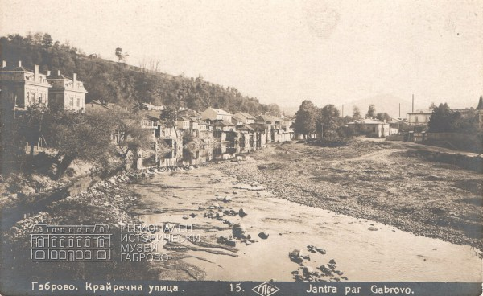

Габрово възниква през Средновековието и постепенно се развива като важен търговски и занаятчийски център. По време на Възраждането градът става един от най-развитите в България.
През 1835 г. е открита Априловската гимназия – първото светско новобългарско училище. След Освобождението Габрово се превръща във водещ индустриален център.